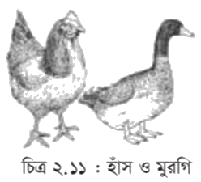

ভীষণ বৈচিত্র্যময় এই পৃথিবী। আমরা আমাদের আশেপাশে একটু তাকালেই এই বৈচিত্র্যের দারুণ সব উদাহরণ দেখতে পাই। এসব বস্তুর মধ্যে কারো জীবন আছে, আবার কারো জীবন নেই। চেয়ার, টেবিল, গাছপালা, দালান, গাড়ি, গ্লাস, কলম এসব হচ্ছে জড়বস্তুর নমুনা। আবার মানুষ, গরু, গাছ, মাছ, মশা, পিঁপড়া এসব হচ্ছে জীবের উদাহরণ। আবার এমন কিছু জীবও রয়েছে যাদের খালি চোখে দেখা যায় না। যেমন: ব্যাকটেরিয়া, অ্যামিবা ইত্যাদি। ছোটো থেকে বড়ো, মাটি থেকে পানি, বাতাসে উপস্থিত নানা প্রকারের জীব নিয়েই আমাদের এই জীবজগৎ গঠিত হয়েছে। সেসব নিয়েই এই অধ্যায়ের আলোচনা।
এই আর্টিকেল শেষে আমরা
• জীবের প্রধান প্রধান বৈশিষ্ট্য ব্যাখ্যা করতে পারব। • প্রধান প্রধান বৈশিষ্ট্যের আলোকে জীবজগতের শ্রেণীবিভাগ করতে পারব। • সপুষ্পক ও অপুষ্পক উদ্ভিদের বৈশিষ্ট্য ব্যাখ্যা করতে পারব। • মেরুদণ্ডী ও অমেরুদণ্ডী প্রাণীর বৈশিষ্ট্য ব্যাখ্যা করতে পারব।। • চারপাশের জীবজগৎ সম্পর্কে সচেতন হব এবং মানব জীবনে এসব জীবের গুরুত্ব উপলব্ধি করতে সক্ষম হব। •বাসার চারপাশের পরিবেশে অবস্থিত জীবের শ্রেণীবিন্যাস করে পোস্টারে প্রদর্শন করতে পারব।
পাঠ-১ : জীব কী?
যার জীবন আছে তাকে জীব বলে। যেমন: গাছপালা, গরু, মাছ, পোকামাকড়, ব্যাঙের ছাতা, ব্যাকটেরিয়া ইত্যাদি। কিন্তু এবার যদি প্রশ্ন করা হয়, জীবন কাকে বলে? এই প্রশ্নের উত্তর এক কথায় দেয়া সম্ভব নয়। জীবনকে সংজ্ঞায়িত করতে হলে জীবের বেশ কিছু বৈশিষ্ট্যর কথা বলতে হয়। আর যাদের মধ্যে এই বৈশিষ্ট্য দেখা যায় তাদেরকেই জীব হিসেবে অভিহিত করা হয়। একটি জীব যে সকল বৈশিষ্ট প্রদর্শন করে তা আলোচনা করা হলো।
চিত্র ২.১: কপিতয় জীব ও জড়
পাঠ-২ : জীবের প্রধান বৈশিষ্ট্য
১। পুষ্টি লাভ: জীব টিকে থাকার জন্য পুষ্টি লাভ করে। খাদ্য থেকে এর পুষ্টি লাভ করে। কোনো কোনো জীব নিজেই নিজের খাদ্য তৈরি করে। এর স্বভোজি। আবার পরভোজী জীব ভক্ষণ করে পুষ্টি লাভ করে।
২। বৃদ্ধি ও বিকাশ: জীবের বৃদ্ধি ঘটে। প্রতিটি জীব কোষ কোষ নামক গাঠনিক একক দিয়ে গঠিত। সময়ের সাথে জৈবিক প্রক্রিয়ায় জীবদেহে কোষের সংখ্যা বৃদ্ধির মাধ্যমে জীবের বৃদ্ধি ঘটে। ও পরিপূর্ণ জীব হিসেবে বিকাশ লাভ করে।
৩। শক্তির রূপান্তর: জীব তার দেহে উৎপন্ন শক্তির রূপান্তর ঘটায়। যেমন: প্রাণীদেহে উৎপন্ন শক্তি তার দেহের বিভিন্ন কাজে ব্যবহার করে।
৪। প্রজনন: জীবের প্রজনন ঘটে। এই প্রক্রিয়ায় জীবের বংশবিস্তার হয়। মানুষ সন্তান-সন্ততি উৎপাদনের মাধ্যমে বংশবিস্তার ঘটায়।
৫। পরিবেশের প্রতি প্রতিক্রিয়া: জিম বাহ্যিক পরিবেশের পরিবর্তনের প্রতি প্রতিক্রিয়া প্রদান করে। আমাদের দেহে মশা বসলে আমরা তা মারার জন্য উদগ্রীব হই। অন্ধকার পরিবেশে জন্মানো গাছ আলোর সন্ধান পাবার জন্য আলোর দিকে দ্রুত বৃদ্ধি পায়।
৬। অভিযোজন: প্রতিটি জীবের অভিযোজন ক্ষমতা আছে। পরিবেশের পরিবর্তনে টিকে থাকার জন্য জীব হাজার বছরের ব্যবধানে অভিযোজন ক্ষমতা লাভ করে। যেমন: মরুভূমিতে জন্মানো অধিকাংশ গাছের পাতা চ্যাপ্টা ও কাটাযুক্ত হয়। উদ্ভিদের এই বৈশিষ্ট্য গুলো এদের পানি সাশ্রয়ে সাহায্য করে। দীর্ঘ অভিযোজন এর ফলে উদ্ভিদে এই বৈশিষ্ট্যগুলো সংযোজিত হয়েছে।
চিত্র ২.২: জীবের খাদ্য গ্রহণ
পাঠ-৩ : জীবের শ্রেণীকরণ
বিজ্ঞানীদের মতে পৃথিবীতে প্রায় ৮৭ লক্ষ ভিন্ন ভিন্ন রকমের জীব রয়েছে। বৈচিত্র্যময় এই জীবকূলকে সহজভাবে জানার জন্য বিজ্ঞানীগণ পৃথিবীর সমস্ত জীবকে তাদের বৈশিষ্ট্যের উপর ভিত্তি করে শ্রেণিবদ্ধকরণের চেষ্টা করেছেন। ১৯৬৯ খ্রী. বিজ্ঞানী হুইটেকার পঞ্চরাজ্য শ্রেণিবিন্যাস প্রবর্তন করেন। ১৯৭৪ খ্রি. বিজ্ঞানী মার্গিউলিস (Margulis) উক্ত শ্রেণিবিন্যাসকে পুনর্বিন্যাস করে জীবজগতের আধুনিক শ্রেণিবিন্যাস প্রবর্তন করেন। আধুনিক শ্রেণিবিন্যাসটি নিম্নরূপ:
চিত্র: জীবের শ্রেণিবিন্যাস
রাজ্য-১: মনেরা: এ রাজ্যের অধীনে বিন্যস্ত জীবের বৈশিষ্ট্যগুলো হলো: ক) জীবটি এককোষী এবং এর কোষে সুগঠিত নিউক্লিয়াস থাকে না খ) এরা খুবই ক্ষুদ্র এবং অণুবীক্ষণ যন্ত্র ছাড়া এদের দেখা যায় না। উদাহরণ: ব্যাকটেরিয়া, সায়ানোব্যাকটেরিয়া, স্পাইরোগাইরা ইত্যাদি।
রাজ্য-২: প্রোটিস্টা: এর অধীনে ঐ সকল জীবকে বিন্যস্ত করা হয়, যাদের কোষ সুগঠিত নিউক্লিয়াসযুক্ত এরা এককোষী বা বহুকোষী ক্লোরোফিল যুক্ত একক বা দলবদ্ধভাবে থাকতে পারে। উদাহরণ: ইউগ্লেনা, অ্যামিবা ইত্যাদি।
রাজ্য-৩: ফানজাই বা ছত্রাক: এদের দেহে সুগঠিত নিউক্লিয়াস থাকে। এরা সাধারণত এককোষী বা বহুকোষী হয়। দেহে ক্লোরোফিল নেই, তাই এরা পরভোজী। উদাহরণ- ইস্ট, পেনিসিলিয়াম, মাশরুম ইত্যাদি।
রাজ্য- ৪: প্লান্টি (উদ্ভিদজগৎ): অধিকাংশ উদ্ভিদ নিজেই নিজের খাদ্য প্রস্তুত করতে পারে। এদের দেহ অসংখ্য কোষ দিয়ে গঠিত। এদের কোষপ্রাচীর সেলুলোজ দ্বারা নির্মিত। এদের কোষে সুগঠিত নিউক্লিয়াস ও কোষ গহ্বর বিদ্যমান। উদ্ভিদে সবুজ কণিকা বা ক্লোরোফিল থাকে, তাই এরা খাদ্য প্রস্তুত করতে পারে। উদাহরণ: আম, জাম, কাঁঠাল ইত্যাদি।
সুবিশাল উদ্ভিদজগৎকে তাদের বিভিন্ন বৈশিষ্ট্যের উপর ভিত্তি করে আবার নানা ভাগে বিভক্ত করা যায় জর্জ বেনথাম ও ডাল্টন হুকার এর প্রাকৃতিক শ্রেণিবিন্যাস অনুযায়ী উদ্ভিদ জগৎকে নিম্নলিখিত ভাগে ভাগ করা হয়েছে।
চিত্র: উদ্ভিদ-জগতের শ্রেণীবিন্যাস
অপুষ্পক উদ্ভিদ
যেসব উদ্ভিদে ফুল, ফল ও বীজ উৎপন্ন হয় না তাদেরকে অপম্পক উদ্ভিদ বলে। যেমন: মস, ফার্ণ ইত্যাদি। এরা পোর বা রেনুর মাধ্যমে বংশবৃদ্ধি করে থাকে। অপুষ্পক উদ্ভিদকে তিন ভাগে ভাগ করা হয়েছে।
সমাঙ্গবর্গীয় উদ্ভিদ: এসব উদ্ভিদের দেহ মূল, কাণ্ড ও পাতায় বিভক্ত করা যায় না। এদের মধ্যে যাদের ক্লোরোফিল আছে, ফলে নিজের খাদ্য নিজে তৈরি করতে পারে তারা শৈবাল। যেমন: স্পাইরোগাইরা। আর যাদের দেহে ক্লোরোফিল নেই, ফলে নিজের খাদ্য নিজে তৈরি করতে পারে না, তারা ছত্রাক। যেমন: এগারিকাস।
চিত্র ২-৩ : সমাঙ্গবর্গীয় উদ্ভিদ
মসবর্গীয় উদ্ভিদ: এদের দেহ কাণ্ড ও পাতায় বিভক্ত করা যায়। কিন্তু এদের মূল নেই, মূলের পরিবর্তে রাইজয়েড নামক সূত্রাকার অঙ্গ থাকে। সাধারণত এরা পুরানো ভেজা দেয়ালে কার্পেটের মতো নরম আস্তরণ করে জন্মায়। যেমন: ব্রায়াম।
ফার্নবর্গীয় উদ্ভিদ: ফার্নবর্গীয় উদ্ভিদের দেহ মূল, কাণ্ড ও পাতায় বিভক্ত। এদের দেহে পরিবহণ টিস্যু রয়েছে ও কচি পাতাগুলো কুণ্ডলীত থাকে। বাড়ির পাশে স্যাতস্যাতে ছায়াযুক্ত স্থানে এবং পুরানো দালানের প্রাচীরে এদের জন্মাতে দেখা যায়। যেমন: টেরিস।
চিত্র ২-৪ : মস ও ফার্ন
সপুষ্পক উদ্ভিদ
উদ্ভিদে ফুলের উপস্থিতি ও অনুপস্থিতির উপর নির্ভর করে উদ্ভিদকে সপুষ্পক ও অপুষ্পক এই দুই ভাগে বিভক্ত করা হয়। যেসব উদ্ভিদে ফুল উৎপন্ন হয় তাদেরকে সপুষ্পক উদ্ভিদ বলে। যেমন: আম, কাঁঠাল, ধান, নারিকেল ইত্যাদি। এদের দেহ সুস্পষ্টভাবে মূল, কাণ্ড এবং পাতা বিভক্ত। ফুলের মাধ্যমে পরাগায়ন প্রক্রিয়ায় এদের বংশবিস্তার ঘটে বীজের আবরণের উপর নির্ভর করে সপুষ্পক উদ্ভিদকে আবার নগ্নবীজী এবং আবৃতবীজী এই দুই ভাগে ভাগ করা হয়। নগ্নবীজী উদ্ভিদের ফুলে গর্ভাশয় থাকে না বলে ফল উৎপন্ন হয় না। তাই বীজ নগ্ন অবস্থায় থাকে। উদাহরণ: সাইকাস, পাইনাস ইত্যাদি। আর আবৃতবীজী উদ্ভিদের ফুলে গর্ভাশয় থাকায় ফল উৎপাদন হয় এবং বীজ আবৃত থাকে। উদাহরণ: আম, জাম, সুপারি ইত্যাদি।।
রাজ্য-৫: এ্যানিমেলিয়া (প্রাণিজগৎ)। এসব জীবের কোষে সেলুলোজ নির্মিত কোষপ্রাচীর থাকে না। সাধারণত এ কোষগুলোতে প্লাস্টিডও থাকে না। তাই খাদ্যের জন্য এরা উদ্ভিদের উপর প্রত্যক্ষ বা পরোক্ষভাবে নির্ভরশীল। উদাহরণ- মাছ, পাখি, গরু, মানুষ ইত্যাদি। প্রাণীজগৎকে আবার নানাভাবে ভাগ করা যায়।
মেরুদন্ডের উপস্থিতির উপর ভিত্তি করে প্রাণীজগৎকে দুই ভাগে ভাগ করা হয়। অমেরুদণ্ডী ও মেরুদন্ডী। মাছ, ব্যাঙ, পাখি, টিকটিকি, গরু, ছাগল, মানুষ ইত্যাদির মেরুদণ্ড আছে। মেরুদন্ড আছে বলে এরা মেরুদন্ডী প্রাণী। মশা, মাছি, প্রজাপতি, চিংড়ি, কাঁকড়া, কেঁচো এরা অমেরুদণ্ডী প্রাণী। অর্থাৎ এদের মেরুদণ্ড নেই।
অমেরুদণ্ডী প্রাণী:
অমেরুদণ্ডী প্রাণীর মেরুদণ্ড নেই, এদের দেহের ভিতর কঙ্কাল থাকে না, চোখ সরল প্রকৃতির বা একটি চোখের মধ্যে অনেকগুলো চোখ থাকে যা পুঞ্জাক্ষি। এদের লেজ নেই।
অমেরুদণ্ডী প্রাণী নানা ধরনের হয়। অনেক অমেরুদণ্ডী প্রাণী আকারে খুবই ছোটো, এদের খালিচোখে দেখা যায় না। অ্যামিবা এমন একটি প্রাণী। কেঁচো, জোঁক একদলভুক্ত অমেরুদণ্ডী প্রাণী, এদের দেহ অনেকগুলো খণ্ডে বিভক্ত থাকে। শামুক ও ঝিনুক আরেক দলভুক্ত প্রাণী, এদের দেহ খণ্ডে খণ্ডে বিভক্ত নয় এবং দেহ সাধারণত শক্ত খোলসে আবৃত থাকে। মাংসল পা থাকে।
প্রজাপতি, মশা, মাছি, তেলাপোকা, উইপোকা, মৌমাছি ইত্যাদি পতঙ্গ দলভুক্ত প্রাণী। পৃথিবীতে পতঙ্গ শ্রেণিভুক্ত প্রাণীদের সংখ্যা সবচেয়ে বেশি। এদের দেহ তিনটি অংশে বিভক্ত যথা: মস্তক, বক্ষ ও উদর। এদের সন্ধিযুক্ত পা ও পুঞ্জাক্ষি থাকে। অনেক পতঙ্গ আমাদের উপকার করে। এরা উপকারী পতঙ্গ। যেমন: মৌমাছি, রেশম পোকা ইত্যাদি। মশা ও মাছি নানা রকম রোগ ছড়ায়। অনেক পতঙ্গ আবার আমাদের ঘরবাড়ি, আসবাবপত্র ও ফসলের ক্ষতিসাধন করে যেমন: উইপোকা, লেদাপোকা, পামরীপোকা ইত্যাদি। এমন কত গুলো সামুদ্রিক প্রাণী আছে, যাদের ত্বকে কাঁটার মতো অংশ থাকে। তারামাছ ও সামুদ্রিক শশা এই দলভুক্ত প্রাণী। জেলিফিশ প্রবালকীট আরেক দলভুক্ত অমেরুদণ্ডী প্রাণী। এদের দেহের ভিতর একটা ফাঁপা গহ্বর বা সিলেন্টেরন থাকে। এদের দেহে একটি মাত্র ছিদ্র থাকে। এই ছিদ্রপথে এরা খাদ্য গ্রহণ করে আবার বর্জ্য পদার্থ বের করে দেয়।
মেরুদণ্ডী প্রাণী:
এদের মেরুদণ্ড আছে। দেহের ভিতর কঙ্কাল থাকে। পাখনা বা পা থাকে। চোখ সরল প্রকৃতির। মানুষ ছাড়া সকল মেরুদণ্ডী প্রাণীর লেজ থাকে। এরা ফুলকা বা ফুসফুসের সাহায্যে শ্বাসকার্য চালায়।
মেরুদণ্ডী প্রাণীদের বৈচিত্র্যের ভিত্তিতে বেশ কয়েকট শ্রেণিতে ভাগ করা যায়। সকল মাছ মৎস্য শ্রেণিভুক্ত প্রাণী। এরা পানিতে বাস করে। বেশির ভাগ মাছের গায়ে আঁশ থাকে। যেমন- ইলিশ, রুই, কৈ ইত্যাদি। আবার কতকগুলোর আঁশ থাকে না। যেমন- মাগুর, শিং, টেংরা, বোয়াল ইত্যাদি। মাছ ফুলকার সাহায্যে শ্বাসকার্য চালায়। এদের পাখনা আছে, পাখনার সাহায্যে এরা সাঁতার কাটে।
ব্যাঙ উভচর শ্রেণিভুক্ত প্রাণী। এদের জীবনের কিছু সময় ডাঙায় ও কিছু সময় পানিতে বাস করে। এদের ত্বকে লোম, আঁশ বা পালক কিছুই থাকে না। দুই জোড়া পা থাকে, পায়ের আঙুলে কোনো নখ থাকে না। ব্যাঙাচি অবস্থায় এরা ফুলকা ও পরিণত অবস্থায় ফুসফুসের সাহায্যে শ্বাসকার্য চালায়।
টিকটিকি, কুমির, সাপ, গিরগিটি ইত্যাদি সরীসৃপ শ্রেণিভুক্ত প্রাণী। এরা বুকে ভর দিয়ে চলে, আঙুলে নখ থাকে, ডিম পাড়ে, ডিম ফুটে বাচ্চা হয়। ফুসফসের সাহায্যে শ্বাসকার্য চালায়।
হাঁস, মুরগি, কবুতর, দোয়েল ইত্যাদি পাখি পক্ষী শ্রেণিভুক্ত প্রাণী। এদের দেহ পালক দিয়ে আবৃত থাকে। পালক পাখি চেনার একটা প্রধান বৈশিষ্ট্য। পাখি ছাড়া আর কোনো প্রাণীর পালক নেই। বেশিরভাগ পাখিই উড়তে পারে। উট পাখি, পেঙ্গুইন এবং আরও কিছু পাখি আছে যারা উড়তে পারে না। পাখি ডিম পাড়ে। ডিম থেকে বাচ্চা হয়।

বানর, ইঁদুর, কুকুর, বিড়াল, গরু, ছাগল ইত্যাদি স্তন্যপায়ী শ্রেণিভুক্ত প্রাণী। মানুষও এই দলের অন্তর্ভুক্ত। এদের দেহে লোম থাকে, বাচ্চা মায়ের দুধ খেয়ে বড়ো হয়, মায়েরা বাচ্চা প্রসব করে। স্তন্যপায়ী প্রাণী মাছ, ব্যাঙ, সাপ, পাখি ইত্যাদি থেকে বুদ্ধিমান। এদের মস্তিষ্ক ও দেহের গঠন বেশ উন্নত।
এই সমস্ত কিছু পড়ে আমাদের যা জানার কথা
• জীব নড়াচড়া করে, পুষ্টি, প্রজনন, শ্বসন, অনুভূতি, অভিযোজন, বৃদ্ধি ও রচনা হয় • জীব জগতের পাঁচটি রাজ্য, যথা - মনেরা, প্রোটিস্টা, ফানজাই বা ছত্রাক, উদ্ভিদ ও প্রাণী। • অপুষ্পক উদ্ভিদ যেমন- সমাঙ্গ উদ্ভিদ, মস ও ফার্ন। • সপুষ্পক উদ্ভিদ যেমন- নগ্ন বীজি ও আবৃতবিজি।